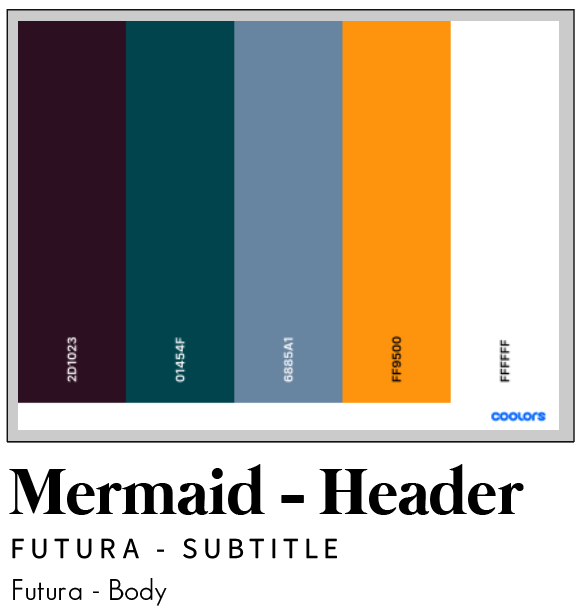

Internship - Introduction
explain internship project
Career Exploration Report
Abstract
This report details two careers and four internship opportunities that relate to those careers. Extensive research about the two careers, multimedia art and animation and fashion design, was performed using a variety of online sources. Many different websites, including government, informational, and corporate sources were used, including the Bureau of Labor Statistics’ Occupational Outlook Handbook and the College Board Big Future College Search. From this research, four internships were located. Out of the four, interning at PerBlue Games is preferable, because not only is the internship remote, but it also offers real-world experience working as a video game artist in a studio setting. Next steps include building a work portfolio to present, applying for an internship at PerBlue Games, and continuing to build skills related to multimedia art and animation.
Aspire Church Internship
Reflection
From June 7 to July 8, 2021, I interned at Aspire Church as part of the Dayton Regional STEM School’s internship program. Students at the Dayton Regional STEM School (DRSS) complete an internship before their senior year with the goal of completing a meaningful project in collaboration with a business, organization, or government agency. The goal of this internship is to practice relevant skills and explore career paths as students prepare to enter the professional world. Over the course of my internship, I explored graphic design as a potential career path as I redesigned an existing website with assistance from my mentor, Rebecca Stutzman, the executive administrator at Aspire Church. From this internship, I practiced designing websites for clients, learned how to use Wix to create websites, and further narrowed my postsecondary/career plans; the experience I gained during my internship will help me in future design projects and will inform my future career decisions.
During my internship at Aspire Church, I was tasked with redesigning the senior pastor’s personal website. The senior pastor, Dr. Leon Stutzman, gave me a sheet of paper with the content he wanted on the website’s homepage, as well as what pages to keep, on my first day; I used this document throughout the planning phase of my project. I started working on my project by creating design guidelines for the website; I assembled fonts and color schemes, and I created a Pinterest board to collect inspiration for the website’s design and layout. Once I received approval for the website’s design scheme, I began working on the website in Wix. The website given to me was last updated in 2017 to announce Dr. Stutzman’s book release, so the information was outdated; I used the document I was given, along with direct feedback, to guide my content updates. I drafted the website across my month-long internship, occasionally asking for feedback from Dr. Stutzman and my mentor. During this project, I used Wix to create the website, but I also used Adobe Illustrator for planning purposes.
Prior to my internship, I had not used Wix in any in-depth capacity; in previous website projects, I either coded them myself using HTML, CSS, and JavaScript, or I used WordPress and existing themes available for free. I used Wix to create the website because Wix was used to host the previous version of the website. During this project, I learned how to use the Wix editor in-depth by exploring the website creator myself and researching tutorials as needed. By the end, I also learned that I prefer to code websites myself, rather than use Wix; I found Wix’s tools to be limiting, at times. However, an important aspect of working with clients is adapting to work within specific parameters. Aside from Wix, I used Adobe Illustrator to arrange font and color schemes in the planning phase of my project; I chose Adobe Illustrator for this task because I am familiar with its interface. In designing the font scheme, I learned how to adjust tracking, or the horizontal space between letters, in Adobe Illustrator; I chose to increase the tracking for subheadings on the final website. I often use Adobe Illustrator for design projects, so attaining a greater understanding of its type editing features will be useful in future graphic design projects.
I considered graphic design as a potential career path at the time of my internship. While I gained practical experience designing a website for a client through this experience, I have decided not to pursue graphic design as a career. Still, this experience was important because I was able to narrow down my career plans. I want to join a career that balances art and technology; while graphic design fills this niche, I would prefer to work in a more artistic medium. Currently, I am considering pursuing a career in the video gaming industry as a 3D modeler or concept artist, because of my positive experiences practicing related skills in Game Design class. Overall, I am grateful that my internship experience allowed me to practice working in a career that I considered pursuing at the time, as it allowed me to consider my experience as a factor in my postsecondary plans.
Over the course of a month, I gained real-world experience in the field of graphic design through my internship at Aspire Church. For the first time, I designed a website for a client, from design mockups to a finished product. I learned how to use Wix to create websites, and I expanded my knowledge of type editing in Adobe Illustrator during the planning phase of my project. Through this experience, I learned what it means to be a graphic designer. Though I decided not to pursue graphic design as a career, the skills I learned and the experience I gained are incredibly valuable to me as they will help me in future design projects.
Progress Journal
Day #01: 06/07/2021
Today, I was introduced to the project I would be completing over the course of my internship: updating the design of the senior pastor’s personal website. The senior pastor, my grandfather, wrote notes for me about what he wanted me to include on his website, which I have included below. Additionally, I observed my mentor using the Corel Suite to make graphics for the church’s weekly newsletter; after she finalized the design, I helped the staff stamp each copy.
Hours Worked: 04
Total Hours Worked: 04
Day #02: 06/10/2022
Earlier this week, I experienced difficulties connecting to the Internet from my personal computer, so I spent time working on the website in ways that would not require a connection, namely, the fonts and color scheme. I used Pinterest and Coolors.net to inspire my design choices, and I chose a blue, purple, and yellow color scheme with the fonts Mermaid (serif) and Futura (sans-serif.)
Hours Worked: 04
Total Hours Worked: 16
Day #03: 06/14/2022
My difficulties connecting to the network continued, but today, I got approval on my chosen fonts and color scheme for the website. Additionally, I helped label flyers with the rest of the staff. At home, I created my first draft of the home page for the website using Wix.
Hours Worked: 06
Total Hours Worked: 22
Day #04: 06/15/2021

Today, I put labels on notebooks that were to be mailed out to churchgoers for Father’s Day alongside Aspire Church’s weekly newsletter. Additionally, I showed my design draft to my client for the first time.
Hours Worked: 04
Total Hours Worked: 26
Day #05: 06/21/2021
On the 17th, I finished my first draft of the updated website from home. I asked for feedback on my draft today, and I was told to change the background to be a galaxy image and to update the image of Dr. Stutzman on the homepage. I plan to enact these changes by the end of the week.
Hours Worked: 04
Total Hours Worked: 38
Day #06: 06/23/2021

I had some technical difficulties accessing Adobe Stock today, but once I got logged in, I was able to find a suitable galaxy image to use for the website’s background. At this point, I still need a new photo of Dr. Stutzman for the homepage in order to update the website.
Hours Worked: 04
Total Hours Worked: 46
Day #07: 06/24/2021
Today, I added the galaxy background image to the homepage. I also added some star-shaped elements to add to the galaxy theme. Lastly, I updated the mobile version of the homepage to ensure the content is properly aligned.
Hours Worked: 04
Total Hours Worked: 50
Day #08: 06/29/2021

Today, I helped the rest of the staff with folding and stamping letters to be sent to churchgoers. I also asked for feedback on my website so far, and I was told to remove the login bar, members only pages, and a section of the About page.
Hours Worked: 04
Total Hours Worked: 58
Day #09: 06/30/2021
Today, I enacted changes based on the feedback I received yesterday. Aside from some additional tweaking, the core of the website is complete.
Hours Worked: 06
Total Hours Worked: 64
Day #10: 07/08/2021
On my last day, I asked for final feedback on the website; I was told to remove one of the pages, which I did. I also updated the image of Dr. Stutzman on the homepage.
Hours Worked: 04
Total Hours Worked: 76